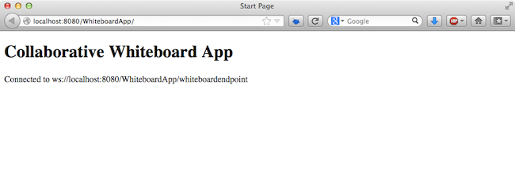

Apache NetBeans
Apache NetBeansLatest release
WebアプリケーションでのWebSocket APIの使用
| This tutorial needs a review. You can edit it in GitHub following these contribution guidelines. |
このチュートリアルでは、1つのサーバー・アプリケーションに接続されているクライアント・ブラウザの間のコラボレーションを可能にする単純なWebアプリケーションを作成する方法を示します。ユーザーがクライアント・ブラウザでキャンバスにグラフィック要素を描画すると、接続されているすべてのクライアントのキャンバスにその要素が表示されます。使用方法ブラウザがWebページをロードすると、クライアント側のスクリプトはWebSocketハンドシェイク・リクエストをアプリケーション・サーバーに送信します。アプリケーションは、セッションで接続されているクライアントからJSONおよびバイナリ・メッセージを受け付けて、接続されているすべてのクライアントにメッセージをブロードキャストできます。
このチュートリアルでは、ブラウザ・クライアントとアプリケーション・サーバーとの間の双方向の通信を可能にするJava API for WebSocket (JSR 356)を使用してWebアプリケーションを作成します。Java API for WebSocketでは、WebSocket Javaコンポーネントの作成、WebSocketイベントの開始とインターセプト、WebSocketのテキストおよびバイナリのメッセージの作成と消費のサポートが提供されます。チュートリアルでは、Java API for JSON Processing (JSR 353)を使用してJSONを生成および消費する方法も示します。Java API for WebSocketおよびJava API for JSON ProcessingはJava EE 7プラットフォーム(JSR 342)の一部です。
アプリケーションには、WebSocketエンドポイント、デコーダおよびエンコーダのインタフェース、Webページ、およびページのロード時またはWebページのフォームからの起動時にクライアント・ブラウザで実行されるJavaScriptファイルが含まれます。Java EE 7テクノロジのリファレンス実装であるGlassFish Server Open Source Edition 4にアプリケーションをデプロイします。
| このチュートリアルは、Arun Gupta氏のブログで見ることができるブログ投稿+ Collaborative Whiteboard using WebSocket in GlassFish 4 - Text/JSON and Binary/ArrayBuffer Data Transfer (TOTD #189)+およびその他のブログ・エントリに基づいています。このブログにアクセスして、WebSocket APIやGlassFish 4の使用に関するその他の多くの有用なエントリをぜひ参照してください。 |
チュートリアルの課題
このチュートリアルに従うには、次のソフトウェアとリソースが必要です。
| ソフトウェアまたはリソース | 必須バージョン |
|---|---|
7.3.1、7.4、8.0、Java EEバージョン |
|
バージョン7または8 |
|
4 |
| GlassFish 4は、NetBeans IDEのJava EEダウンロード・バンドルにバンドルされています。 |
前提条件
このドキュメントは、次のテクノロジについて基本的な知識またはプログラミング経験を持つ読者を想定して書かれています。
-
Javaプログラミング
-
JavaScript/HTMLプログラミング
-
NetBeans IDE
このチュートリアルを開始する前に、必要に応じて次のドキュメントをお読みください。
終了したプロジェクトのZIPアーカイブはダウンロードできます。
Webアプリケーション・プロジェクトの作成
この課題の目標は、IDEで新規プロジェクト・ウィザードを使用してWebアプリケーション・プロジェクトを作成することです。プロジェクトを作成する際、Java EEバージョンとして「Java EE 7」を、アプリケーション・サーバーとしてGlassFish 4を選択します。GlassFish 4はJava EE 7プラットフォームのリファレンス実装です。このチュートリアルでアプリケーションを作成するには、IDEに登録されたJava EE 7をサポートするアプリケーション・サーバーが必要です。
-
メイン・メニューから「ファイル」>「新規プロジェクト」(Windowsの場合は[Ctrl]-[Shift]-[N]、Macの場合は[⌘]-[Shift]-[N])を選択します。
-
「Maven」カテゴリから「Webアプリケーション」を選択します。「次」をクリックします。
-
「プロジェクト名」に*「WhiteboardApp」*と入力し、プロジェクトの場所を設定します。
-
「グループID」に*「org.sample」*と入力します。「次」をクリックします。
-
「サーバー」に*「GlassFish Server 4.0」*を選択します。
-
「Java EEバージョン」を*「Java EE 7 Web」*に設定します。「終了」をクリックします。

Figure 1. 新規プロジェクト・ウィザードの「サーバー」および「Java EEバージョン」
「終了」をクリックすると、IDEがプロジェクトを作成し、そのプロジェクトが「プロジェクト」ウィンドウで開きます。
WebSocketエンドポイントの作成
この項では、WebSocketエンドポイント・クラスおよびJavaScriptファイルを作成します。WebSocketエンドポイント・クラスには、セッションのオープン時に実行される基本的なメソッドを含めます。次に、ページのロード時にサーバーとのハンドシェイクを開始するJavaScriptファイルを作成します。次に、接続が正常であることをテストするアプリケーションを実行します。
WebSocket APIおよび注釈の使用の詳細は、+ javax.websocket+パッケージのサマリーを参照してください。
エンドポイントの作成
この課題では、IDEのウィザードを利用してWebSocketエンドポイント・クラスを作成します。
-
「プロジェクト」ウィンドウで「ソース・パッケージ」ノードを右クリックし、「新規」>「その他」を選択します。
-
「Web」カテゴリで「WebSocketエンドポイント」を選択します。「次」をクリックします。
-
「クラス名」に*「MyWhiteboard」*と入力します。
-
「パッケージ」ドロップダウン・リストで「
org.sample.whiteboardapp」を選択します。 -
「WebSocket URI」に*「/whiteboardendpoint」*と入力します。「終了」をクリックします。

Figure 2. 新規ファイル・ウィザードのWebSocketエンドポイント
「終了」をクリックすると、IDEによってWebSocketエンドポイント・クラスが生成され、ソース・エディタでファイルが開きます。エディタで、IDEによってWebSocket APIの一部である注釈が生成されたことを確認できます。クラスには、クラスがエンドポイントであることを識別する +@ServerEndpoint+ という注釈が付けられ、注釈のパラメータとしてWebSocket URIが指定されています。IDEによって +@OnMessage+ という注釈が付けられたデフォルトの onMessage メソッドも生成されました。 @OnMessage という注釈が付けられたメソッドは、クライアントがWebSocketメッセージを受信するたびに起動されます。
@ServerEndpoint("/whiteboardendpoint")
public class MyWhiteboard {
@OnMessage
public String onMessage(String message) {
return null;
}
}-
次のフィールド(*太字*部分)をクラスに追加します。
@ServerEndpoint("/whiteboardendpoint")
public class MyWhiteboard {
*private static Set<Session> peers = Collections.synchronizedSet(new HashSet<Session>());*
@OnMessage
public String onMessage(String message) {
return null;
}
}-
次の
onOpenおよびonCloseメソッドを追加します。
@OnOpen
public void onOpen (Session peer) {
peers.add(peer);
}
@OnClose
public void onClose (Session peer) {
peers.remove(peer);
}``onOpen`` および ``onClose`` メソッドには、 ``link:https://javaee-spec.java.net/nonav/javadocs/javax/websocket/OnOpen.html[+@OnOpen+]`` および ``link:https://javaee-spec.java.net/nonav/javadocs/javax/websocket/OnClose.html[+@OnClose+]`` のWebSocket API注釈が付けられています。 ``@OnOpen`` という注釈が付けられたメソッドは、Webソケット・セッションが開かれたときにコールされます。この例では、注釈の付いた ``onOpen`` メソッドでブラウザ・クライアントを現在のセッションのピアのグループに追加し、 ``onClose`` メソッドでブラウザをグループから削除します。
メソッドの生成には、ソース・エディタのヒントとコード補完を使用すると便利です。クラスの宣言の横の左マージンのヒント・グリフをクリックし(または、カーソルをクラスの宣言内に置いて[Alt]-[Enter])、ポップアップ・メニューでメソッドを選択します。コード補完をメソッドのコーディングに使用すると便利です。

Figure 3. ソース・エディタのコード・ヒント
-
エディタで右クリックし、「インポートを修正」を選択します([Alt]-[Shift]-[I]、Macの場合は[⌘]-[Shift]-[I])。変更を保存します。
``javax.websocket`` のクラスのインポート文がファイルに追加されます。
これでエンドポイントが作成されました。次にWebSocketセッションを開始するためのJavaScriptファイルを作成する必要があります。
WebSocketセッションの開始
この課題では、WebSocketセッションを開始するJavaScriptファイルを作成します。ブラウザ・クライアントは、サーバーとのHTTPハンドシェイクを使用し、TCPを介してセッションに参加します。JavaScriptファイルで、エンドポイントの wsURI の名前を指定し、WebSocketを宣言します。 wsURI URIスキームはWebSocketプロトコルの一部で、アプリケーションのエンドポイントのパスを指定します。
-
「プロジェクト」ウィンドウでプロジェクト・ノードを右クリックし、「新規」>「その他」を選択します。
-
新規ファイル・ウィザードの「Web」カテゴリで「JavaScriptファイル」を選択します。「次」をクリックします。
-
「JavaScriptファイル名」に*「websocket」*と入力します。「終了」をクリックします。
-
次のコードをJavaScriptファイルに追加します。
var wsUri = "ws://" + document.location.host + document.location.pathname + "whiteboardendpoint";
var websocket = new WebSocket(wsUri);
websocket.onerror = function(evt) { onError(evt) };
function onError(evt) {
writeToScreen('<span style="color: red;">ERROR:</span> ' + evt.data);
}このスクリプトは、ブラウザによって websocket.js がロードされる際、サーバーとセッション・ハンドシェイクを開始します。
-
index.htmlを開き、ページのロードの終了時にwebsocket.jsをロードする次のコード(*太字*部分)をファイルの最後に追加します。
<body>
*<h1>Collaborative Whiteboard App</h1>
<script type="text/javascript" src="websocket.js"></script>*
</body>これで、WebSocketエンドポイントが機能していること、セッションが開始されたこと、およびクライアントがセッションに追加されたことをテストできます。
エンドポイントのテスト
この課題では、ブラウザがエンドポイントに接続されたら、ブラウザ・ウィンドウに wsURI を出力するよう、簡単なメソッドをいくつかJavaScriptに追加します。
-
次の
<div>タグ(*太字*部分)をindex.htmlに追加します。
<h1>Collaborative Whiteboard App</h1>
*<div id="output"></div>*
<script type="text/javascript" src="websocket.js"></script>-
次の宣言とメソッドを
websocket.jsに追加します。変更を保存します。
// For testing purposes
var output = document.getElementById("output");
websocket.onopen = function(evt) { onOpen(evt) };
function writeToScreen(message) {
output.innerHTML += message + "<br>";
}
function onOpen() {
writeToScreen("Connected to " + wsUri);
}
// End test functionsページがロードされると、JavaScript関数は、ブラウザがエンドポイントに接続されていることを示すメッセージを出力します。エンドポイントが正しく実行されていることを確認したら、関数を削除できます。
-
「プロジェクト」ウィンドウでプロジェクトを右クリックし、「実行」を選択します。
アプリケーションを実行すると、IDEでGlassFishサーバーが起動され、アプリケーションがビルドおよびデプロイされます。ブラウザでindexページが開かれ、ブラウザ・ウィンドウに次のメッセージが表示されます。

Figure 4. ブラウザ・ウィンドウ内のエンドポイントへの接続メッセージ
ブラウザ・ウィンドウに、メッセージが受け付けられたエンドポイント( http://localhost:8080/WhiteboardApp/whiteboardendpoint )が表示されます。
ホワイトボードの作成
この項では、JSONテキスト・メッセージを送受信するクラスおよびJavaScriptファイルを作成します。コンテンツ、およびペイントブラシの形状と色を指定するラジオ・ボタンを含むHTML <form> を描画および表示するためのHTML5 Canvas要素も追加します。
Webページへのキャンバスの追加
この課題では、 canvas 要素および form 要素をデフォルトのindexページに追加します。フォームのチェックボックスによって、キャンバスのペイントブラシのプロパティが決まります。
-
ソース・エディタで
index.htmlを開きます。 -
エンドポイントのテスト用に追加した
<div>タグを削除し、開始のbodyタグの後に次の<table>および<form>要素(*太字*部分)を追加します。
<h1>Collaborative Whiteboard App</h1>
*<table>
<tr>
<td>
</td>
<td>
<form name="inputForm">
</form>
</td>
</tr>
</table>*
<script type="text/javascript" src="websocket.js"></script>
</body>-
canvas要素用に次のコード(*太字*部分)を追加します。
<table>
<tr>
<td>
*<canvas id="myCanvas" width="150" height="150" style="border:1px solid #000000;"></canvas>*
</td>-
次の
<table>を追加して、色と形状を選択するラジオ・ボタンを追加します。変更を保存します。
<table>
<tr>
<td>
<canvas id="myCanvas" width="150" height="150" style="border:1px solid #000000;"></canvas>
</td>
<td>
<form name="inputForm">
*<table>
<tr>
<th>Color</th>
<td><input type="radio" name="color" value="#FF0000" checked="true">Red</td>
<td><input type="radio" name="color" value="#0000FF">Blue</td>
<td><input type="radio" name="color" value="#FF9900">Orange</td>
<td><input type="radio" name="color" value="#33CC33">Green</td>
</tr>
<tr>
<th>Shape</th>
<td><input type="radio" name="shape" value="square" checked="true">Square</td>
<td><input type="radio" name="shape" value="circle">Circle</td>
<td> </td>
<td> </td>
</tr>
</table>*
</form>キャンバス上に描画された図形の形状、色、および座標は、JSONの構造の文字列に変換され、WebSocketエンドポイントにメッセージとして送信されます。
POJOの作成
この課題では、単純なPOJOを作成します。
-
プロジェクト・ノードを右クリックし、「新規」>「Javaクラス」を選択します。
-
「クラス名」に*「Figure」*と入力し、「パッケージ」ドロップダウン・リストで「
org.sample.whiteboardapp」を選択します。「終了」をクリックします。 -
ソース・エディタで、次のコード(*太字*部分)を追加します。
public class Figure {
*private JsonObject json;*
}コードを追加すると、 javax.json.JsonObject のインポート文を追加するよう求められます。求められない場合は、[Alt]-[Enter]を押します。
``javax.json.JsonObject`` の詳細は、Java EE 7仕様の一部であるJava API for JSON Processing (link:http://jcp.org/en/jsr/detail?id=353[+JSR 353+])を参照してください。
-
jsonの取得および設定メソッドを作成します。
「コードを挿入」ポップアップ・メニュー(Windowsの場合は[Alt]-[Insert]、Macの場合は[Ctrl]-[I])で取得および設定メソッドを選択すると、「取得メソッドおよび設定メソッドの生成」ダイアログ・ボックスが開きます。または、メイン・メニューから「ソース」>「コードを挿入」を選択します。

Figure 5. 「取得メソッドおよび設定メソッドの生成」ダイアログ・ボックス
-
jsonのコンストラクタを追加します。
public Figure(JsonObject json) {
this.json = json;
}「コードを挿入」ポップアップ・メニュー([Ctrl]-[I])で「コンストラクタ」を選択します。

Figure 6. 「コンストラクタの生成」ポップアップ・メニュー
-
次の
toStringメソッドを追加します。
@Override
public String toString() {
StringWriter writer = new StringWriter();
Json.createWriter(writer).write(json);
return writer.toString();
}-
エディタで右クリックし、「インポートを修正」を選択します([Alt]-[Shift]-[I]、Macの場合は[⌘]-[Shift]-[I])。変更を保存します。
座標クラスの作成
ここで、キャンバスに描画される図形の座標のクラスを作成します。
-
プロジェクト・ノードを右クリックし、「新規」>「Javaクラス」を選択します。
-
新規Javaクラス・ウィザードで「クラス名」に*「Coordinates」*と入力し、「パッケージ」ドロップダウン・リストで「
org.sample.whiteboardapp」を選択します。「終了」をクリックします。 -
ソース・エディタで、次のコードを追加します。変更を保存します。
private float x;
private float y;
public Coordinates() {
}
public Coordinates(float x, float y) {
this.x = x;
this.y = y;
}
public float getX() {
return x;
}
public void setX(float x) {
this.x = x;
}
public float getY() {
return y;
}
public void setY(float y) {
this.y = y;
}クラスには x と y 座標のフィールドおよび取得と設定のメソッドのみが含まれます。
JSON文字列の生成
この課題では、 canvas 要素に描画される図形の詳細を、websocketエンドポイントに送信されるJSON構造にするJavaScriptファイルを作成します。
-
プロジェクト・ノードを右クリックし、「新規」>「JavaScriptファイル」を選択して新規JavaScriptファイル・ウィザードを開きます。
-
「ファイル名」に*「whiteboard」*と入力します。「終了」をクリックします。
「終了」をクリックすると、IDEで空のJavaScriptファイルが作成され、エディタでこのファイルが開きます。「プロジェクト」ウィンドウの「Webページ」ノードの下に新規ファイルが表示されます。
-
キャンバスを初期化し、イベント・リスナーを追加する次のコードを追加します。
var canvas = document.getElementById("myCanvas");
var context = canvas.getContext("2d");
canvas.addEventListener("click", defineImage, false);ユーザーが canvas 要素内をクリックすると、 defineImage メソッドが起動されることがわかります。
-
次の
getCurrentPos、defineImageおよびdrawImageTextメソッドを追加して、JSON構造を作成し、エンドポイントに送信します(sendText(json))。
function getCurrentPos(evt) {
var rect = canvas.getBoundingClientRect();
return {
x: evt.clientX - rect.left,
y: evt.clientY - rect.top
};
}
function defineImage(evt) {
var currentPos = getCurrentPos(evt);
for (i = 0; i < document.inputForm.color.length; i++) {
if (document.inputForm.color[i].checked) {
var color = document.inputForm.color[i];
break;
}
}
for (i = 0; i < document.inputForm.shape.length; i++) {
if (document.inputForm.shape[i].checked) {
var shape = document.inputForm.shape[i];
break;
}
}
var json = JSON.stringify({
"shape": shape.value,
"color": color.value,
"coords": {
"x": currentPos.x,
"y": currentPos.y
}
});
drawImageText(json);
sendText(json);
}
function drawImageText(image) {
console.log("drawImageText");
var json = JSON.parse(image);
context.fillStyle = json.color;
switch (json.shape) {
case "circle":
context.beginPath();
context.arc(json.coords.x, json.coords.y, 5, 0, 2 * Math.PI, false);
context.fill();
break;
case "square":
default:
context.fillRect(json.coords.x, json.coords.y, 10, 10);
break;
}
}送信されるJSONの構造は次のようになります。
{
"shape": "square",
"color": "#FF0000",
"coords": {
"x": 31.59999942779541,
"y": 49.91999053955078
}
}``websocket.send()`` を使用してJSON文字列を送信する ``sendText(json)`` メソッドを追加する必要があります。
-
エディタで
websocket.jsを開き、JSONをエンドポイントに送信するためのメソッドおよびエンドポイントからメッセージを受信したらイメージを描画するためのメソッドを追加します。
websocket.onmessage = function(evt) { onMessage(evt) };
function sendText(json) {
console.log("sending text: " + json);
websocket.send(json);
}
function onMessage(evt) {
console.log("received: " + evt.data);
drawImageText(evt.data);
}
エンドポイントのテスト用に websocket.js に追加したコードは削除できます。
|
-
whiteboard.jsをロードする次の行(*太字*部分)をindex.htmlの最後に追加します。
</table>
<script type="text/javascript" src="websocket.js"></script>
*<script type="text/javascript" src="whiteboard.js"></script>*
<body>エンコーダおよびデコーダ・インタフェースの実装
この課題では、デコーダおよびエンコーダ・インタフェースを実装するクラスを作成し、Webソケット・メッセージ(JSON)をPOJOクラス Figure にデコードし、エンドポイントに送信するために Figure をJSON文字列としてエンコードします。
詳細は、技術記事JSR 356、Java API for WebSocketのメッセージ・タイプおよびエンコーダ、デコーダに関する項を参照してください。
-
プロジェクト・ノードを右クリックし、「新規」>「Javaクラス」を選択します。
-
「クラス名」に*「FigureEncoder」*と入力し、「パッケージ」ドロップダウン・リストで「
org.sample.whiteboardapp」を選択します。「終了」をクリックします。 -
ソース・エディタで次のコード(*太字*部分)を追加し、WebSocket Encoderインタフェースを実装します。
public class FigureEncoder *implements Encoder.Text<Figure>* {
}-
javax.websocket.Encoderのインポート文を追加し、抽象メソッドを実装します。
クラスの宣言にカーソルを置き、[Alt]-[Enter]を押して、ポップアップ・メニューから*「すべての抽象メソッドを実装」*を選択します。
-
次の変更(*太字*部分)を加えて、生成された抽象メソッドを変更します。変更を保存します。
@Override
public String encode(Figure *figure*) throws EncodeException {
*return figure.getJson().toString();*
}
@Override
public void init(EndpointConfig ec) {
*System.out.println("init");*
}
@Override
public void destroy() {
*System.out.println("destroy");*
}-
プロジェクト・ノードを右クリックし、「新規」>「Javaクラス」を選択します。
-
「クラス名」に*「FigureDecoder」*と入力し、「パッケージ」ドロップダウン・リストで「
org.sample.whiteboardapp」を選択します。「終了」をクリックします。 -
ソース・エディタで、次のコード(*太字*部分)を追加し、WebSocket Decoderインタフェースを実装します。
public class FigureDecoder *implements Decoder.Text<Figure>* {
}-
javax.websocket.Decoderのインポート文を追加し、抽象メソッドを実装します。 -
生成された抽象メソッドに次の変更(*太字*部分)を加えます。
@Override
public Figure decode(String *string*) throws DecodeException {
*JsonObject jsonObject = Json.createReader(new StringReader(string)).readObject();
return new Figure(jsonObject);*
}
@Override
public boolean willDecode(String *string*) {
*try {
Json.createReader(new StringReader(string)).readObject();
return true;
} catch (JsonException ex) {
ex.printStackTrace();
return false;
}*
}
@Override
public void init(EndpointConfig ec) {
*System.out.println("init");*
}
@Override
public void destroy() {
*System.out.println("destroy");*
}-
インポートを修正して変更内容を保存します。
次に、 MyWhiteboard.java を変更して、エンコーダとデコーダを指定する必要があります。
アプリケーションの実行
これでアプリケーションを実行する準備がほぼ整いました。この課題では、WebSocketエンドポイント・クラスを変更してJSON文字列のエンコーダとデコーダを指定し、メッセージを受信したら、接続されているクライアントにJSON文字列を送信するメソッドを追加します。
-
エディタで
MyWhiteboard.javaを開きます。 -
@ServerEndpoint注釈を変更し、エンドポイントのエンコーダとデコーダを指定します。エンドポイントの名前のパラメータvalueを明示的に指定する必要があります。
@ServerEndpoint(*value=*"/whiteboardendpoint"*, encoders = {FigureEncoder.class}, decoders = {FigureDecoder.class}*)-
デフォルトで生成された
onMessageメソッドを削除します。 -
次の
broadcastFigureメソッドを追加し、メソッドに@OnMessageの注釈を付けます。
@OnMessage
public void broadcastFigure(Figure figure, Session session) throws IOException, EncodeException {
System.out.println("broadcastFigure: " + figure);
for (Session peer : peers) {
if (!peer.equals(session)) {
peer.getBasicRemote().sendObject(figure);
}
}
}-
エディタで右クリックし、「インポートを修正」を選択します([Alt]-[Shift]-[I]、Macの場合は[⌘]-[Shift]-[I])。変更を保存します。
-
「プロジェクト」ウィンドウでプロジェクトを右クリックし、「実行」を選択します。
「実行」をクリックすると、IDEはブラウザ・ウィンドウでhttp://localhost:8080/WhiteboardApp/を開きます。
| 以前のアプリケーションをアプリケーション・サーバーからアンデプロイするか、ブラウザでページを強制的に再ロードする必要がある場合があります。 |
ブラウザ・メッセージを確認すると、キャンバスをクリックするたびに、文字列がJSONを介してエンドポイントに送信されていることがわかります。

Figure 7. ブラウザ内の図形を含むキャンバスおよびWebコンソールに表示されたJSON
別のブラウザで http://localhost:8080/WhiteboardApp/ を開くと、一方のブラウザのキャンバス内をクリックするたびに新しい円や正方形が他方のブラウザのキャンバスに複製されることがわかります。

Figure 8. エンドポイントを介してJSONを送信する2つのブラウザ
エンドポイントへのバイナリ・データの送信
これで、アプリケーションで文字列を処理し、JSONを介してエンドポイントに送信できます。文字列は、接続されているクライアントに送信されます。この項では、バイナリ・データを送受信するようJavaScriptファイルを変更します。
バイナリ・データをエンドポイントに送信するために、WebSocketの binaryType プロパティを arraybuffer に設定する必要があります。これによって、WebSocketを使用したバイナリ転送は ArrayBuffer を介して行われることが保証されます。バイナリ・データ変換は、 whiteboard.js の defineImageBinary メソッドによって行われます。
-
websocket.jsを開き、WebSocketのbinaryTypeプロパティをarraybufferに設定する次のコードを追加します。
websocket.binaryType = "arraybuffer";-
バイナリ・データをエンドポイントに送信する次のメソッドを追加します。
function sendBinary(bytes) {
console.log("sending binary: " + Object.prototype.toString.call(bytes));
websocket.send(bytes);
}-
onMessageメソッドを変更し、受信メッセージのデータ型に応じてキャンバスを更新するメソッドを選択する次のコード(*太字*部分)を追加します。
function onMessage(evt) {
console.log("received: " + evt.data);
*if (typeof evt.data == "string") {*
drawImageText(evt.data);
*} else {
drawImageBinary(evt.data);
}*
}バイナリ・データのメッセージを受信すると、 drawImageBinary メソッドが起動されます。
-
whiteboard.jsを開いて、次のメソッドを追加します。受信バイナリ・データの解析後、drawImageBinaryメソッドを起動してキャンバスを更新します。defineImageBinaryメソッドを使用して、バイナリ・データとしてキャンバスのスナップショットを準備します。
function drawImageBinary(blob) {
var bytes = new Uint8Array(blob);
// console.log('drawImageBinary (bytes.length): ' + bytes.length);
var imageData = context.createImageData(canvas.width, canvas.height);
for (var i=8; i<imageData.data.length; i++) {
imageData.data[i] = bytes[i];
}
context.putImageData(imageData, 0, 0);
var img = document.createElement('img');
img.height = canvas.height;
img.width = canvas.width;
img.src = canvas.toDataURL();
}
function defineImageBinary() {
var image = context.getImageData(0, 0, canvas.width, canvas.height);
var buffer = new ArrayBuffer(image.data.length);
var bytes = new Uint8Array(buffer);
for (var i=0; i<bytes.length; i++) {
bytes[i] = image.data[i];
}
sendBinary(buffer);
}バイナリ・データを ArrayBuffer 型として生成し、エンドポイントに送信する場合に defineImageBinary を起動する方法を追加する必要があります。
-
index.htmlを開き、<table>要素を変更して、フォームの表に次の行を追加します。
<tr>
<th> </th>
<td><input type="submit" value="Send Snapshot" onclick="defineImageBinary(); return false;"></td>
<td> </td>
<td> </td>
<td> </td>
</tr>新しい行には、接続されているピアにキャンバスのバイナリ・スナップショットを送信する「Send Snapshot」ボタンが含まれます。ボタンがクリックされると、 whiteboard.js の defineImageBinary メソッドが起動されます。
-
MyWhiteboard.javaを開き、エンドポイントがバイナリ・データのメッセージを受信すると、ピアにバイナリ・データを送信する次のメソッドを追加します。
@OnMessage
public void broadcastSnapshot(ByteBuffer data, Session session) throws IOException {
System.out.println("broadcastBinary: " + data);
for (Session peer : peers) {
if (!peer.equals(session)) {
peer.getBasicRemote().sendBinary(data);
}
}
}
java.nio.ByteBuffer のインポート文を追加する必要があります。
|
アプリケーションを変更して、ユーザーがエンドポイントへのデータの送信を停止できるようにできます。デフォルトでは、すべてのピアはページを開くとすぐに接続され、データはブラウザからすべての接続されているピアに送信されます。オプションが選択されていない場合にデータがエンドポイントに送信されないよう単純な条件文を追加できます。これは、受信するデータに影響しません。データは引き続き、エンドポイントから受信されます。
-
whiteboard.jsのdefineImageメソッドを変更し、次のコード(*太字*部分)を追加します。
drawImageText(json);
* if (document.getElementById("instant").checked) {*
sendText(json);
* }*
}id checked の要素をチェックする条件コード
-
index.htmlを開き、<table>要素を変更してフォームにチェックボックスを追加します。
<tr>
<th> </th>
<td><input type="submit" value="Send Snapshot" onclick="defineImageBinary(); return false;"></td>
<td>*<input type="checkbox" id="instant" value="Online" checked="true">Online*</td>
<td> </td>
<td> </td>
</tr>「Online」チェックボックスが選択解除されている場合、データは送信されませんが、クライアントは引き続きエンドポイントからデータを受信します。
「Send Snapshot」ボタンおよび「Online」チェックボックスを追加してアプリケーションを再度実行すると、indexページに新しい要素が表示されます。別のブラウザを開いて「Online」ボタンを選択解除すると、キャンバス内をクリックしたときにJSONメッセージが送信されないことがわかります。

Figure 9. バイナリ・データが送信されたというメッセージを表示するブラウザ内のWebコンソール
「Send Snapshot」をクリックすると、バイナリ・データがエンドポイントに送信され、接続されているクライアントにブロードキャストされます。
関連項目
NetBeans IDEを使用したJava EEアプリケーションの開発方法の詳細は、次のリソースを参照してください。
Java EEの使用に関する詳細は、Java EEチュートリアルを参照してください。
nbj2eeメーリング・リストに登録することによって、NetBeans IDE Java EE開発機能に関するご意見やご提案を送信したり、サポートを受けたり、最新の開発情報を入手したりできます。